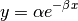
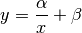
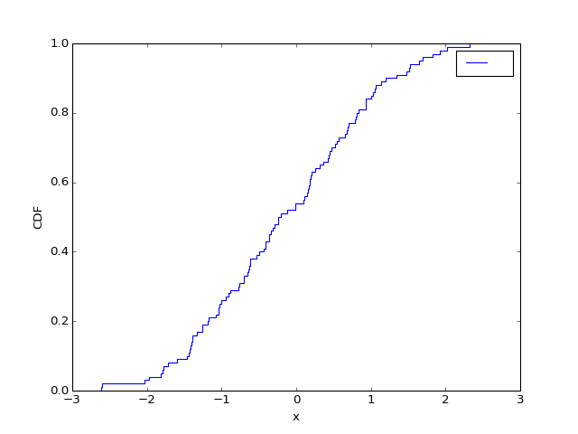

pylayers.util.pyutil module¶
- pylayers.util.pyutil.ExpFunc(x, y)[source]¶
exponential fitting Parameters ———- x : np.array y : np.array
Returns: a : estimation of alpha
b : estimation of beta
Notes
Fit data to an exponential function of the form :

Examples
>>> a = 3 >>> b = 2 >>> x = sp.rand(100) >>> n = 0.3*sp.randn(100) >>> y = a*np.exp(-b*x) + abs(n) >>> alpha,beta = ExpFunc(x,y)
- pylayers.util.pyutil.InvFunc(x, z)[source]¶
inverse fitting
Parameters: x : array (,N)
y : array (,N)
Returns: alpha : float
beta : float
Notes
fit data to an inverse function of the form :

- pylayers.util.pyutil.LegFunc(nn, ntrunc, theta, phi)[source]¶
Compute Legendre functions Ylm(theta,phi)
Parameters: nn : integer
ntrunc : integer
theta : np.array(1xNtheta)
theta : np.array(1xNtheta)
phi : np.array(1xNtheta)
Returns: Ylm : np.array
- pylayers.util.pyutil.PowFunc(x, y)[source]¶
power fitting
Parameters: x : array (,N)
y : array (,N)
Returns: alpha : float
beta : float
Notes
- fit data to an inverse function of the form :
- pylayers.util.pyutil.bitreverse(N=256, nbit=9)[source]¶
Parameters: N : ideally a power of 2 Returns: t : list of the N integers in time reverse order Notes
This function is used for example in buildGv. One error has been fixed by forbidding the value 0 The value 0 is not return
- pylayers.util.pyutil.cdf(x, color='b', label=' ', lw=1, xlabel='x', ylabel='CDF', logx=False)[source]¶
plot the cumulative density function of x
Parameters: x : np.array (N)
color : string
color symbol
label : string
label
lw: float :
linewidth
xlabel : string
xlabel
ylabel : string
ylabel
Examples
>>> from matplotlib.pyplot import * >>> import pylayers.util.pyutil as pyu >>> from scipy import * >>> import matplotlib.pylab as plt >>> x = randn(100) >>> pyu.cdf(x)
(Source code, png, hires.png, pdf)

{kind=link}
{kind=link}
- pylayers.util.pyutil.coldict()[source]¶
Color dictionary html color
Notes
‘Link on html color<http://html-color-codes.blogspot.com/>’_
- pylayers.util.pyutil.corrcy(a, b)[source]¶
cyclic matching correlation
Parameters: a : array
b : array
Returns: tk : :
See also
- pylayers.util.pyutil.createtrxfile(_filename, freq, phi, theta, Fpr, Fpi, Ftr, Fti)[source]¶
Create antenna trx file Usage:createtrxfile(filename,freq,phi,theta,Fpr,Fpi,Ftr,Fti)
- pylayers.util.pyutil.cshift(l, offset)[source]¶
- ndarray circular shift
- Parameters
l : ndarray offset : int
The offset value can be either positive or negative and the applied offset value is applied modulo the length of l
>>> a = np.array([1,2,3]) >>> b = cshift(a,1) >>> c = cshift(a,-1) >>> d = cshift(a,4)
- pylayers.util.pyutil.delay(p1, p2)[source]¶
calculate delay in ns between 2 points
Parameters: p1 ndarray (1x2) :
point 1 coordinates (meters)
p2 ndarray (1x2) :
point 2 coordinates (meters)
See also
Examples
>>> p1 = np.array([0,0]) >>> p2 = np.array([0,0.3]) >>> tau = delay(p1,p2) >>> assert tau==1.,"Warning : speed of light has changed"
- pylayers.util.pyutil.dimcmp(ar1, ar2)[source]¶
compare shape of arrays
Parameters: ar1 : ndarray
ar2 : ndarray
Returns: return code : int
0 arrays are not compatible 1 arrays have same dimension 2 second argument has greater dimension 3 first argument has greater dimension
- pylayers.util.pyutil.encodmtlb(lin)[source]¶
encode python list of string in Matlab format
Parameters: lin : input list
encodmtlbi(lin) : :
Returns: lout : output list
Notes
The List is read column by column and written line by line in a same NxM matrix. If char does not exist it is replaced by space.
Examples
>>> lin = ['aaa','bbbbbbb','ccc','dd'] >>> F = {} >>> F['lin']=encodmtl(lin) >>> print F['lin'] >>> io.savemat('encodmtlb_ex.mat',F)
- pylayers.util.pyutil.extract_block_diag(A, M, k=0)[source]¶
Extracts blocks of size M from the kth diagonal of square matrix A, whose size must be a multiple of M.
- pylayers.util.pyutil.fill_block_diag(A, blocks, M, k=0)[source]¶
fill A with blocks of size M from the kth diagonal
- pylayers.util.pyutil.findpos(ar, val)[source]¶
return the i position in array ar, such that ar[i] == val if the value is not find, return ‘value not found’
- pylayers.util.pyutil.foo(var1, var2, long_var_name='hi')[source]¶
A one-line summary that does not use variable names or the function name.
Several sentences providing an extended description. Refer to variables using back-ticks, e.g. var.
Parameters: var1 : array_like
Array_like means all those objects – lists, nested lists, etc. – that can be converted to an array. We can also refer to variables like var1.
var2 : int
The type above can either refer to an actual Python type (e.g. int), or describe the type of the variable in more detail, e.g. (N,) ndarray or array_like.
Long_variable_name : {‘hi’, ‘ho’}, optional
Choices in brackets, default first when optional.
Returns: describe : type
Explanation
output : type
Explanation
tuple : type
Explanation
items : type
even more explaining
Raises: BadException :
Because you shouldn’t have done that.
See also
- otherfunc
- relationship (optional)
- newfunc
- Relationship (optional), which could be fairly long, in which case the line wraps here.
thirdfunc, fourthfunc, fifthfunc
Notes
Notes about the implementation algorithm (if needed).
This can have multiple paragraphs.
You may include some math:

And even use a greek symbol like
 inline.
inline.(Source code, png, hires.png, pdf)

References
Cite the relevant literature, e.g. [170]. You may also cite these references in the notes section above.
[170] O. McNoleg, “The integration of GIS, remote sensing, expert systems and adaptive co-kriging for environmental habitat modelling of the Highland Haggis using object-oriented, fuzzy-logic and neural-network techniques,” Computers & Geosciences, vol. 22, pp. 585-588, 1996. Examples
These are written in doctest format, and should illustrate how to use the function.
>>> a=[1,2,3]
{kind=link}
{kind=link}
- pylayers.util.pyutil.getdir(longname)[source]¶
get directory of a long name
Parameters: longname : string
short name of the file
Returns: dirname: string :
- pylayers.util.pyutil.getlong(shortname, directory)[source]¶
get a long name
This function allows to construct the long file name relatively to a current project directory which is stored in the environment variable $BASENAME
Parameters: shortname : string
short name of the file
dir : string
directory in $BASENAME or $PYLAYERS
Returns: longname : string
long name of the file
- pylayers.util.pyutil.getshort(longname)[source]¶
get a short name
Parameters: longname : string
short name of the file
Returns: shortname : string
short name of the file
- pylayers.util.pyutil.ininter(ar, val1, val2)[source]¶
ininter(ar,val1,val2):
This function return the set of samples from array ar which are included in the interval [val1 val2]
Usage Case :
- pylayers.util.pyutil.lt2idic(lt)[source]¶
convert list of tuple to dictionary
Parameters: lt : list See also
Examples
>>> from pylayers.util.pyutil import * >>> lt = [ ('1','1 2 3'),('2','1.5 2 3'),('3','4.78 89.0 2')] >>> d = lt2idic(lt)
- pylayers.util.pyutil.randcol(Nc)[source]¶
get random color
Parameters: Nc : int
Number of color
Returns: col : list
A list of colors.
- pylayers.util.pyutil.rgb(valex, out='int')[source]¶
convert a hexadecimal color into a (r,g,b) array >>> import pylayers.util.pyutil as pyu >>> coldic = pyu.coldict() >>> val = rgb(coldic[‘gold’],’float’)
- pylayers.util.pyutil.rotate_line(A, B, theta)[source]¶
rotation of a line [AB] of an angle theta with A fixed
Parameters: A: ndarray :
B: ndarray :
theta: float :
Returns: Br: ndarray :
- pylayers.util.pyutil.shp(arr)[source]¶
return dimension of an array
Parameters: arr : ndarray Returns: shp : tuple Examples
>>> import pylayers.util.pyutil as pyu >>> import numpy as np >>> from scipy import * >>> a = np.arange(10) >>> pyu.shp(a) (1, 10) >>> b = randn(2,2) >>> pyu.shp(b) (2, 2)
- pylayers.util.pyutil.sqrte(z)[source]¶
Evanescent SQRT for waves problems
Parameters: z : np.array
array of complex numbers
Returns: y : np.array
Notes
- for z = a-j*b, y is defined as follows:
- [ sqrt(a-j*b), if b~=0
- y = [ sqrt(a), if b==0 and a>=0
- [ -j*sqrt(|a|), if b==0 and a<0 (i.e., the negative of what the ordinary SQRT gives)
- this definition is necessary to produce exponentially-decaying evanescent waves
- (under the convention exp(j*omega*t) for harmonic time dependence)
it is equivalent to the operation y = conj(sqrt(conj(a-j*b))), but it fixes a bug in the ordinary SQRT in MATLAB arising whenever the real part is negative and the imaginary part is an array with some zero elements. For example, compare the outputs: conj(sqrt(conj(-1 - array([0,1])*1j))) = 0 + 1.0000i, sqrte(-1 - [0; 1]*j) = 0 - 1.0000i 0.4551 - 1.0987i 0.4551 - 1.0987i but
conj(sqrt(conj(-1 + 0*1j))) = 0 - 1.000i, sqrte(-1 + 0*j) = 0 - 1.000i
- pylayers.util.pyutil.tstincl(ar1, ar2)[source]¶
test wheteher ar1 interval is included in interval ar2
Parameters: ar1 : ndarray
ar2 : ndarray
Returns: 0 : if ar1 and ar2 have no points in common
1 : if ar2 includes ar1
2 : else
See also
- pylayers.util.pyutil.untie(a, b)[source]¶
Parameters: a : np.array
b : np.array
Returns: boolean,a,r :
boolean,b,r :
- pylayers.util.pyutil.unzipd(path, zipfilename)[source]¶
unzip a zipfile to a folder
Parameters: filepath : string
zipfilename : string
- pylayers.util.pyutil.unzipf(path, filepath, zipfilename)[source]¶
unzip a file from zipfile to a folder
Parameters: filepath : string
zipfilename : string
- pylayers.util.pyutil.writeDetails(t, description='simulation', location='Rennes')[source]¶
write MeasurementsDetails.txt
- pylayers.util.pyutil.writemeca(ID, time, p, v, a)[source]¶
- write mecanic information into text file:
- output/TruePosition.txt output/UWBSensorMeasurements.txt